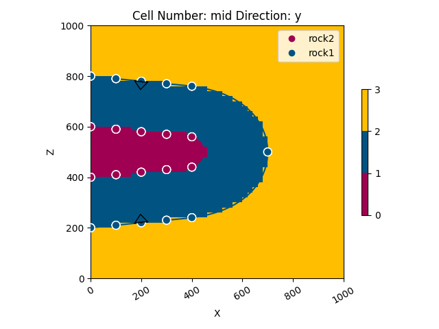

Note
Go to the end to download the full example code.
Model 3 - Recumbent Fold¶
This script demonstrates how to create a geological model of a recumbent fold using GemPy, a Python-based, open-source library for implicit geological modeling.
# Import necessary libraries
import gempy as gp
import gempy_viewer as gpv
# sphinx_gallery_thumbnail_number = 2
Generate the model Define the path to data
data_path = 'https://raw.githubusercontent.com/cgre-aachen/gempy_data/master/'
path_to_data = data_path + "/data/input_data/jan_models/"
# Create a GeoModel instance
data = gp.create_geomodel(
project_name='recumbent',
extent=[0, 1000, 0, 1000, 0, 1000],
resolution=[50, 50, 50],
refinement=6,
importer_helper=gp.data.ImporterHelper(
path_to_orientations=path_to_data + "model3_orientations.csv",
path_to_surface_points=path_to_data + "model3_surface_points.csv"
)
)
# Map geological series to surfaces
gp.map_stack_to_surfaces(
gempy_model=data,
mapping_object={"Strat_Series": ('rock2', 'rock1')}
)
# Compute the geological model
gp.compute_model(data)
geo_data = data
Surface points hash: 16bd39d19892d9a70aa41b1141f130894de6a36910f27e98ec712351f9373ce2
Orientations hash: 1d12a150cd6f3faa81b8bbebc167ba69de4ac85fc524b771bd97ce94eb2a3e60
Setting Backend To: AvailableBackends.numpy
Chunking done: 29 chunks
Chunking done: 22 chunks
Chunking done: 17 chunks
Plot the initial geological model in the y direction
gpv.plot_2d(geo_data, direction=['y'], show_results=False)
# Plot the result of the model in the y direction with data
gpv.plot_2d(geo_data, direction=['y'], show_data=True)

- 
<gempy_viewer.modules.plot_2d.visualization_2d.Plot2D object at 0x7fbc30a9ceb0>
gpv.plot_3d(geo_data, show_surfaces=True)

<gempy_viewer.modules.plot_3d.vista.GemPyToVista object at 0x7fbbf888cd30>
Total running time of the script: (0 minutes 32.036 seconds)